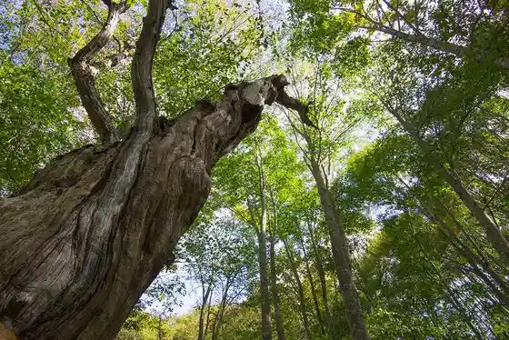
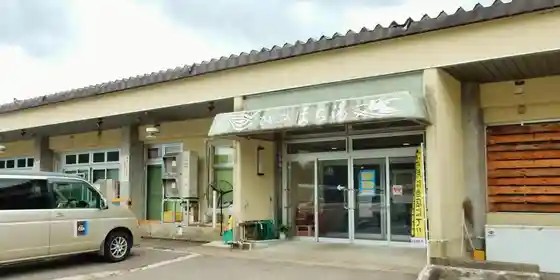
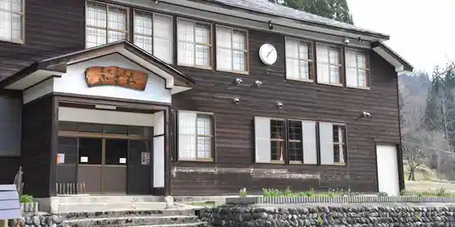

Iwana Village
Tadami, Fukushima · 090-2603-6162 · Official / source link
Iyashi Forest
Tadami, Fukushima · 0241-82-5250 · Official / source link

Tsuru Saiku
Tadami, Fukushima · Official / source link
Hitoppuromachi Yu
Tadami, Fukushima · 0241 · Official / source link

Shinrin no Bunko Fuzawa
Tadami, Fukushima · 0241 · Official / source link

Furusato Tateda Ko Kura
Tadami, Fukushima · 0241 · Official / source link
Tadami Infomeshon Center
Tadami, Fukushima · 0241-82-5250 · Official / source link
Gamo Katakuri Park
Tadami, Fukushima · 0241-82-5250 · Official / source link
Yogai Yama
Tadami, Fukushima · 0241-82-5250 · Official / source link
Oku Aizu Tadami no Mori Campground
Tadami, Fukushima · 0241-82-2432 · Official / source link
Ki no Sato Yu Ra Sato
Tadami, Fukushima · 0241-84-2888 · Official / source link
Mitsuishi Shrine
Tadami, Fukushima · 0241-82-5250 · Official / source link
Rokuju Sato Etsu Yukiwari Ri Kaido
Tadami, Fukushima · 0241-82-5250 · Official / source link
Megumi Forest
Tadami, Fukushima · 0241-82-5250 · Official / source link
Tago Kura Mizumi
Tadami, Fukushima · 0241-82-5250 · Official / source link
J-POWER Tadami Tenjikan
Tadami, Fukushima · 0241-82-3150 · Official / source link
Kawai Tsuginosuke Memorial Museum
Tadami, Fukushima · 0241-82-2870 · Official / source link
Tadami Buna to Kawa no Museum
Tadami, Fukushima · 0241-72-8355 · Official / source link
Fukazawa Onsen Mura Yu
Tadami, Fukushima · 0241-84-7707 · Official / source link
Tadami Ski Area
Tadami, Fukushima · 0241-82-2304 · Official / source link
Tago Kura Dam
Tadami, Fukushima · 0241-82-5250 · Official / source link
Asakusa Gaku
Tadami, Fukushima · 0241-82-5250 · Official / source link
Gamo Gaku
Tadami, Fukushima · 0241-82-5250 · Official / source link
Aizu Asahi Gaku
Tadami, Fukushima · 0241-82-5250 · Official / source link
Seiho Jikan Oto Do
Tadami, Fukushima · 0241-82-5320 · Official / source link
Kyu Igarashi Ie House (Tadami)
Tadami, Fukushima · 0241-82-5320 · Official / source link
Kyu Hasebe Ie House (Kanozu Bansho)
Tadami, Fukushima · 0241-82-5320 · Official / source link